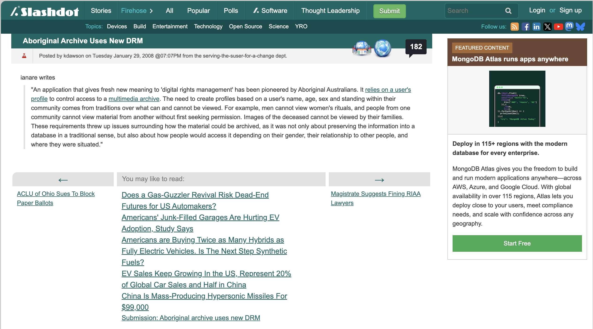
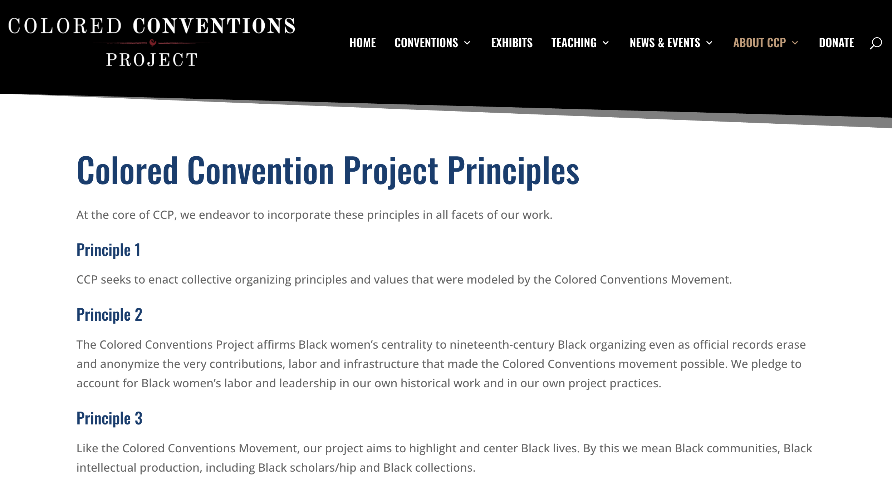
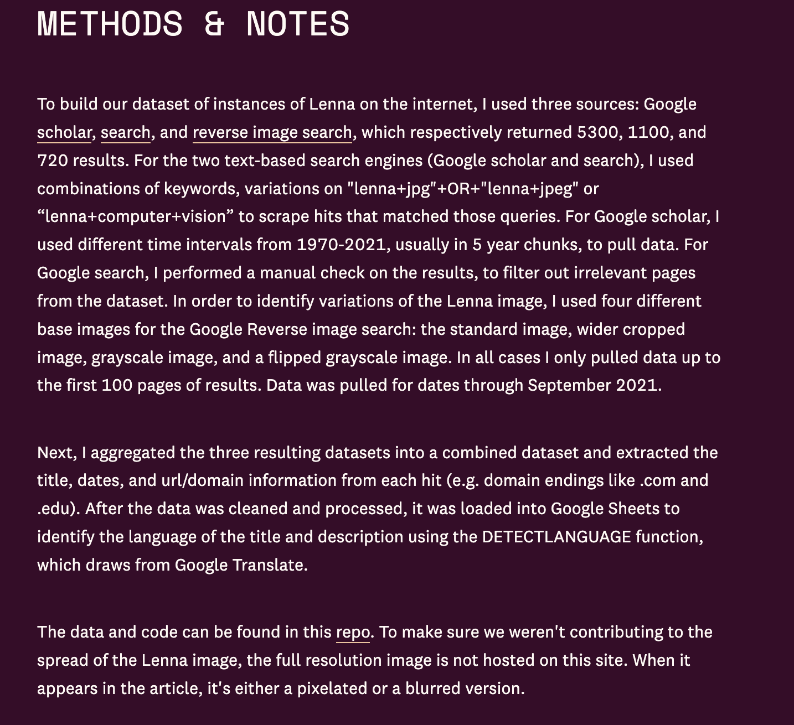

Why does Christen open her article with the Slashdot story about the Aboriginal archive and its use of new DRM?



No universal answers, but every project answers each of these implicitly, so make it explicit:
Let’s revisit the GitHub Guidelines